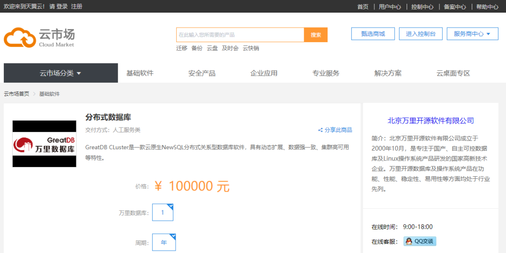

生态 | 万里数据库正式入驻中国电信天翼云市场
近日，万里数据库正式入驻中国电信天翼云市场。后期，双方将通过密切合作，实现资源共享、优势互补，促进双方产品和服务进一步的延伸和拓展，共建一体化信息技术解决方案，为用户提供云数据库服务，为政企用户的业务上云夯实基础。

图
万里数据库入驻中国电信天翼云市场界面图
中国电信股份有限公司云计算分公司（以下简称“天翼云”）是中国电信旗下直属专业公司，集市场营销、运营服务、产品研发于一体，致力于成为亚太领先的云计算基础服务提供商，为用户提供云主机、云存储、云备份大数据等全线产品，同时为政府、医疗、教育、金融等行业提供定制化云解决方案，是政府企业客户的首选云服务商。
天翼云市场以天翼云为基础，融合各领域服务商，为用户提供云计算软件及服务的分发平台。该平台是天翼云生态建设的重要部分，旨在聚拢合作伙伴，为用户打造一站式产品及服务采购环境。
此次在中国电信天翼云市场上线的GreatDB分布式是万里数据库从2010年开始自主研发的一款核心数据库产品。经过10余年500多个业务场景的锤炼与验证，产品在功能、性能、稳定性、易用性等方面均处于行业领先水平，并广泛应用于金融、运营商、能源、政府、交通等多个行业领域。
分割线
万里数据库正式入驻中国电信天翼云市场，标志着双方在企业服务生态领域的强强联合，有利于未来打造更完善的国产基础软件生态链。
双方将以入驻为起点，逐步丰富合作内容，共同打造强生命力、强服务力的云数据库产品与技术服务，与中国电信天翼云其他相关产品深度融合，构建全方位一体化服务，为政企等用户提供更加智能、快捷的数字化解决方案。
推荐阅读1.生态 | 万里数据库与麒麟软件达成战略合作 开启生态共荣新篇章！
2. 生态 | 万里数据库与电科云达成全面战略合作 共推信创产业生态做大做强
3. 生态|万里数据库加入绿色计算产业联盟，共推产业发展


扫码二维码
关注公众号